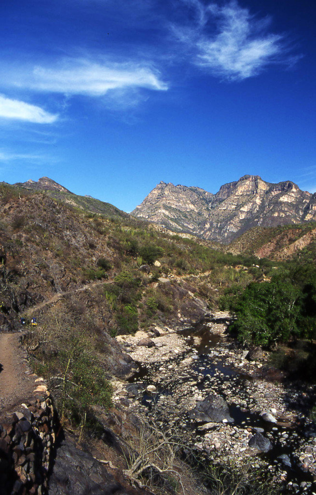
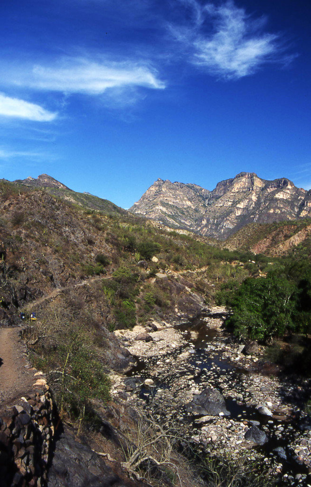

Thinking about overseas adventure travel? Have you put any thought into the best places to go when it comes to overseas adventure travel? Nepal is one of the most popular places of all, when you visit this magical country you will have the best adventures right there at your doorstep. Only overseas adventure travel in Nepal will give you these kinds of opportunities so if this is not on your list of possible places to visit yet then now is the time to put it on there!
In Nepal your overseas adventure travel is going to be fascinating. You will get to see the Himalayan Mountains and experience all that the rich Nepalese culture has to offer. They are an amazing people who have managed to hang on to their own culture and beliefs longer than most other countries. When overseas adventure travel takes you to Nepal you will have the chance to see all of the fantastic and one of a kind lakes and forests and you can even spend days or weeks camping out in their forests with a specialized guide. And the waterfalls in Nepal are to die for, you will never see anything more gorgeous in your life as their waterfalls! This should be at the top of your overseas adventure travel destination list for sure!
 
